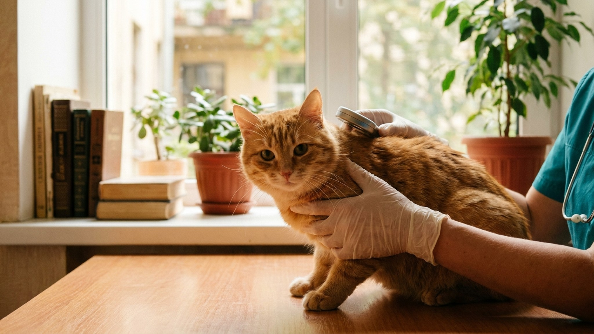

Микрочип — это не «следящее устройство», как часто думают. Это пассивная стеклянная капсула размером с рисовое зерно, которая активируется только сканером и хранит один номер. По этому номеру в базе данных можно найти владельца. Не GPS, не передатчик, не «слежка от государства». При этом — единственное надёжное средство возврата потерявшегося питомца и обязательное условие для большинства путешествий за границу.
🐾 Первая помощь — всегда под рукой
AnimaLife подскажет, что делать в тревожной ситуации с питомцем ещё до визита к врачу. Откройте в один тап.
Микрочип — это пассивный RFID-транспондер стандарта ISO 11784/11785, заключённый в биосовместимое стекло размером 2 × 12 мм. Не имеет батарейки. Не передаёт сигналов. Не отслеживает местоположение. Активируется только при поднесении сканера на расстояние 3-10 см. Сканер «считывает» 15-значный уникальный номер. По этому номеру в одной из баз данных (RusPetID, AnimalID-RU, AnimalFace, Identy) можно узнать имя владельца, телефон, адрес — то, что владелец указал при регистрации.
Чип ставится под кожу в области холки (между лопатками). Процедура занимает 30 секунд, выглядит как обычная инъекция. Болезненность сопоставима с прививкой. Чип служит всю жизнь питомца, не требует замены или зарядки.
1. Возврат потерявшегося питомца. По данным RusPetID на конец 2025, 89% чипированных потерявшихся животных в России возвращаются к владельцам, против 22% не чипированных. Любой ветеринар, приют или волонтёр имеет сканер и в первую очередь проверяет животное на чип.
2. Путешествия за границу. С 2025 года для въезда в страны ЕС, Великобританию, ОАЭ, Турцию обязателен микрочип стандарта ISO 11784/11785 + ветеринарный паспорт с отметкой о прививке от бешенства, сделанной ПОСЛЕ установки чипа. Без чипа — отказ на границе, возврат за свой счёт.
3. Юридическое доказательство собственности. При спорах (разводы, кражи питомцев, найдёнышах) номер чипа в государственной базе с регистрационными документами — единственное юридически значимое доказательство «это моя кошка».
4. Племенная работа. Все РКФ и FIF/CFA родословные с 2026 требуют чипирования до получения метрики/родословной.
5. Замена клейма. Татуировка-клеймо больше не считается надёжной идентификацией (выцветает, плохо читается, можно подделать). С 2025 РКФ переходит исключительно на микрочипы.
В 2025 году вступил в силу федеральный закон ФЗ-498 в новой редакции, который вводит обязательное чипирование всех собак (категория «потенциально опасные породы») до конца 2026 года. Для кошек и остальных собак — пока добровольно, но регионы (Москва, Санкт-Петербург, Татарстан) уже вводят местные правила обязательной регистрации в муниципальных базах. Не зарегистрированный питомец в этих регионах может быть приравнен к безнадзорному и помещён в приют при обнаружении на улице.
Перечень потенциально опасных пород в РФ (по постановлению Правительства 974): акбаш, американский бандог, амбульдог, бразильский бульдог, булли кутта, бульдог алапахский чистокровный, бэндог, волко-собачьи гибриды, гуль дог, питбульмастиф, северокавказская собака, и метисы этих пород. Для них чипирование обязательно с 1 января 2026.
Цена в Москве и Санкт-Петербурге в 2026:
Итого: 1 500 - 3 800 ₽ разово на всю жизнь питомца. В регионах — обычно на 30-40% дешевле.
Где сделать:
Что проверить после процедуры:
«Чип следит за животным» — нет. Это пассивный RFID без батарейки. Не передаёт сигналов. Активируется только при поднесении сканера.
«Чип вызывает рак» — есть единичные исследования (Albrecht & McDonald, 2007) о случаях саркомы у мышей в зоне имплантации. У кошек и собак за 30 лет массового использования — менее 0.001% риска. Это сравнимо с риском заражения от прививки и не считается клинически значимым.
«Чип можно вырезать у вора» — теоретически да, но это операция, которая оставляет видимый шрам и требует сканера для определения местоположения. На практике вор предпочитает уничтожить чип сильным магнитом — что, опять же, оставляет следы при экспертизе и не отменяет факта кражи.
«Можно поставить «своё» клеймо» — нет. Любая «фирменная» татуировка не имеет юридической силы и не считывается ни одной таможней.
«Слишком больно для котёнка» — нет. Котятам ставят чип одновременно с первой прививкой, в 8-9 недель. Они даже не отдёргивают лапу.
🐾 Экономьте на лишних визитах к врачу
Сначала спросите AI-ветеринара в AnimaLife — часто этого достаточно, чтобы понять, нужен ли визит к врачу.
Микрочипирование — это разовая инвестиция в 1500-3800 ₽, которая значительно увеличивает шансы вернуть потерявшегося питомца (89% против 22%), открывает двери для путешествий с ним, является обязательным требованием для племенной работы и потенциально опасных пород, и не имеет значимых противопоказаний. Если у вашего питомца ещё нет чипа — это та задача, которую стоит закрыть в этом году.